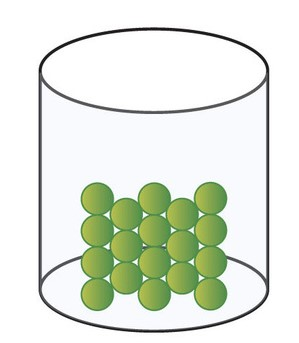
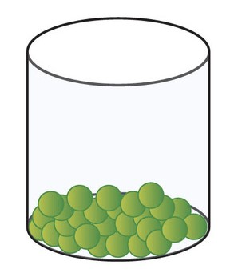
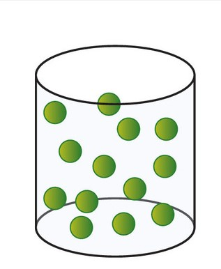

Before we give the definitions of solids, liquids and gases, we should know the meaning of two new terms: rigid and fluid. Rigid means 'unbending' or 'inflexible'. A stone is rigid because it is unbending or inflexible. Fluid means 'a material which can flow easily' and requires a vessel (or container) to keep it. Water is a fluid because if we pour water on the top of a table, it flows over the surface of the table. Moreover, water requires a vessel to keep it. Milk is a fluid and chlorine gas is also a fluid.
A solid is a rigid form of matter. Due to their rigidity, solids have a tendency to maintain their shape when subjected to outside force. Thus, the main identifying characteristic of solids is their rigidity. Solids do not require a container to keep them. A brick and a log of wood are two common solids.
A liquid is a fluid form of matter which occupies the lower part of the container in which it is kept. A liquid does not fill the whole container. Being fluids, liquids require a container to keep them. A liquid has a well-defined surface, so a liquid can be kept in an open container. The liquid will not escape from the open container by itself. Water and milk are two common liquids around us.
A gas is a fluid form of matter which fills the whole container in which it is kept. Being fluids, gases also require a container to keep them. A gas does not have a free surface, so a gas has to be kept in a closed container. A gas will escape if kept in an open container. This is why gases are usually kept in air-tight gas cylinders. For example, cooking gas (LPG) is kept in air-tight metal cylinders. From this discussion we conclude that both, liquids and gases are known as fluids. Please note that the characteristic of liquids and gases of 'flowing' easily is called 'fluidity'. Due to fluidity, liquids and gases change their shapes readily when subjected to outside force.
On the basis of physical states, all the matter can be classified into three groups: Solids, Liquids and Gases. For example:
(i) Sugar, sand, iron, wood, rocks, minerals and ice are solids.
(ii) Water, milk, oil, kerosene, petrol and alcohol are liquids, and
(iii) Air, oxygen, hydrogen, carbon dioxide and steam are gases.
Solids, liquids and gases are called the three states of matter. In other words, matter exists in three physical states: solid, liquid and gas. The solids, liquids and gaseous forms of matter have different properties. These properties can be used to distinguish between the three states of matter: solid, liqudis.
Ice, wood, coal, stone, iron, brick, etc., are some of the common solids around us. The solids have the following characteristic properties:
1. Solids have a fixed shape and a fixed volume.
2. Solids cannot be compressed much.
3. Solids have high densities. They are heavy.
4. Solids do not fill their container completely.
Water, milk, fruit juice, ink, groundnut oil, kerosene and petrol, etc., are some of the common liquids.
The liquids have the following characteristic properties:
1. Liquids have a fixed volume but they have no fixed shape. Liquids take the shape of the vessel in which they are placed.
2. Like solids, liquids cannot be compressed much.
3. Liquids have moderate to high densities. They are usually less dense than solids.
4. Liquids do not fill their container completely.
5. Liquids generally flow easily.
Air, oxygen, hydrogen, carbon dioxide, nitrogen and steam, etc., are some of the common gases. The gases have the following characteristic properties:
1. Gases have neither a fixed shape nor a fixed volume. Gases acquire the shape and volume of the vessel in which they are kept.
2. Gases can be compressed easily (into a small volume).
3. Gases have very low densities. They are very, very light. A gas is much lighter than the same volume of a solid or a liquid.
4. Gases fill their container completely.
5. Gases flow easily.
According to the kinetic theory of matter, the particles (and possess kinetic energy). Some forces of attraction also exist between the particles of matter.
These are called interparticle forces. The forces of attraction tend to hold the particles together and control their movements.
The interparticle forces of attraction are the maximum when the particles are close together. As the distances (or spaces) between the particles of matter increase, the forces of attraction between them decrease. The movement of particles (or kinetic energy of particles) can be changed by heating the matter (or cooling it). Higher the temperature, greater is the movement of particles. We can now say that the following properties of particles determine the physical state of matter.
That is, the following properties of particles decide whether a given substance will exist as a solid, a liquid or a gas:
1. The spaces (or distances) between the particles. The spaces (or distances) between the particles are the minimum in solids, a little more in liquids, and the maximum in gases.
2. The force of attraction between particles. The forces of attraction between the particles (or interparticle forces) are the strongest in solids, less strong in liquids and negligible in gases.
3. The amount of movement of particles (or kinetic energy of particles). The movement of particles (or kinetic energy of particles) is the minimum in solids, more in liquids and the maximum in gases.